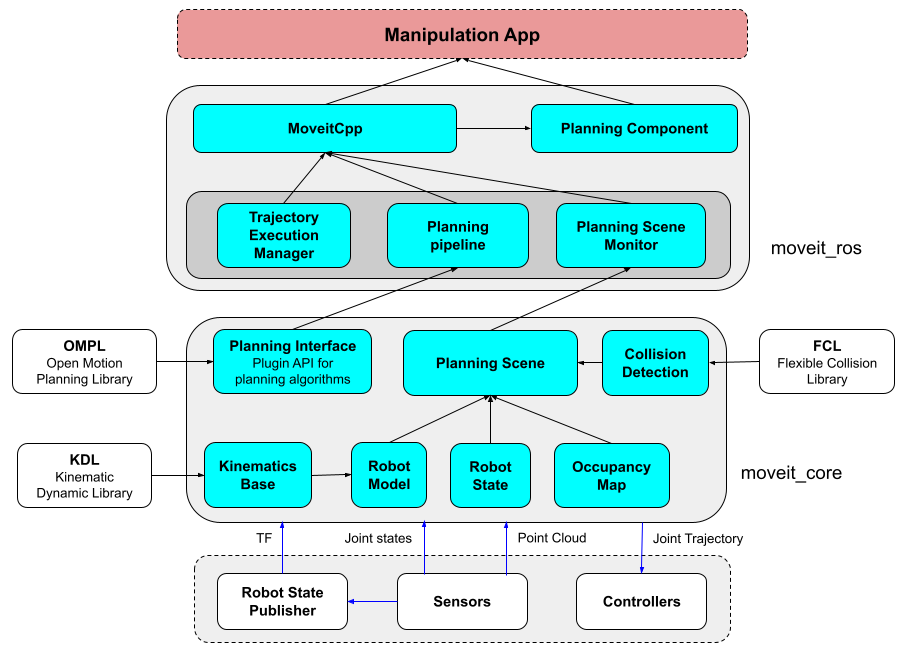
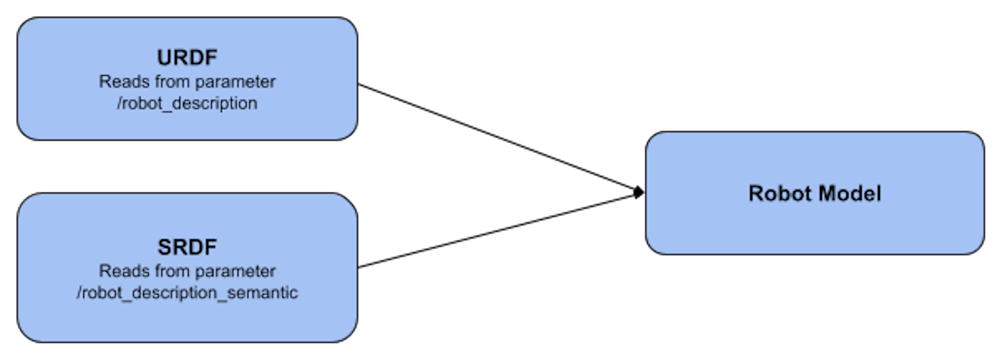
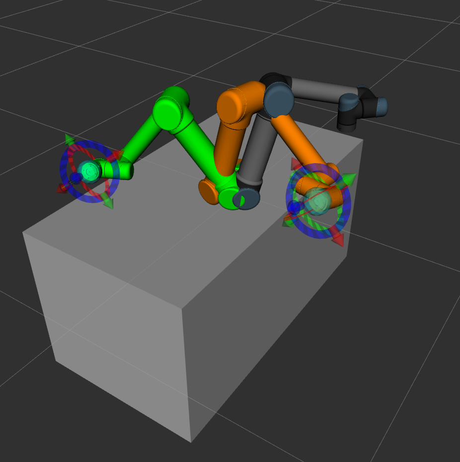
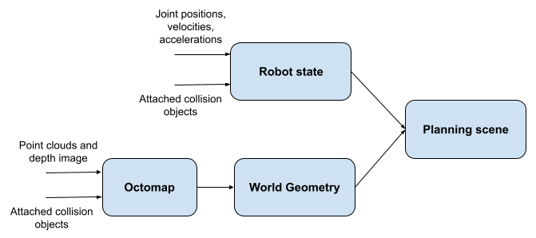
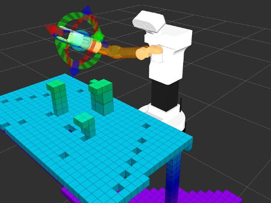
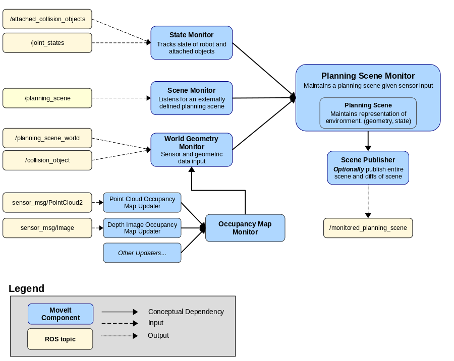
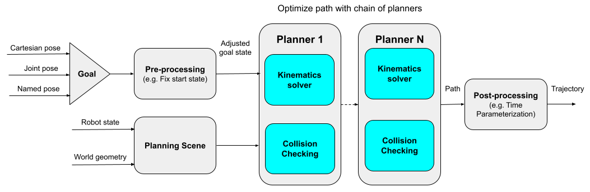
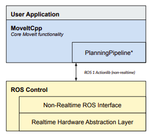
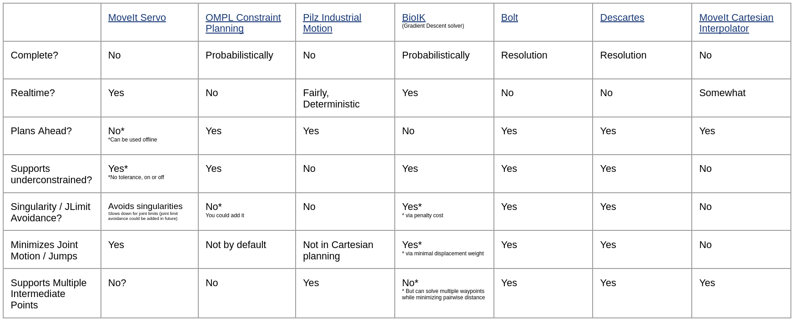

layout: true <div class="header"><img src="https://rosin-project.eu/wp-content/uploads/rosin_ack_logo_wide.png" style="background-color:transparent"/></div> <div class="footer"><img src="https://www.ipa.fraunhofer.de/content/dam/ipa/ipa.svg" /><p>© Fraunhofer IPA</p></div> <div class="triangle"></div> --- # MOVEIT ## The motion planning framework --- ## MoveIt Capabilities - Motion Planning - Generate high-degree of freedom trajectories through cluttered environments and avoid local minima - Manipulation - Analyze and interact with the environment with grasp generation - Inverse Kinematics - Solve for joint positions for a given pose, even in over-actuated arms - Control - Execute time-parameterized joint trajectories to low level hardware controllers through common interfaces - 3D Perception - Connect to depth sensors and point clouds with Octomaps - Collision Checking - Avoid obstacles using geometric primitives, meshes, or point clouds --- ## Timeline  --- ## Overview <div> <center>  </center> </div> --- ## Robot Model - `RobotModel` class contains the relationships between all links and joints including their joint limit properties as loaded from the `URDF`. - It also separates the robot's links and joints into planning groups defined in the `SRDF` (`JointModelGroup`). <div style="float:left; margin:80px">  </div> <div style="float:left"> <img src="resources/panda_tf.png" width="400px"> </div> --- ## Robot State - `RobotState` contains information about the robot at a certain point in time, storing vectors of joint positions and optionally velocities and accelerations. - `RobotState` can include any objects attached to (carried by) the robot - It also contains helper functions for setting the Cartesian pose and for computing Cartesian trajectories <div> <center>  </center> </div> --- ## Planning Scene - `PlanningScene` is an object used for storing the representation of the world around the robot and also the state of the robot itself - It provides the main interface used for collision checking and constraint checking - `PlanningSceneMonitor` is the recommended method to create and maintain the current planning scene using data from the robot's joints and the sensors on the robot <div style="float:left; margin:30px">  </div> <div style="float:left">  </div> --- ## Planning Scene Monitor The `PlanningSceneMonitor` wraps a `PlanningScene` with ROS interfaces for keeping the planning scene up-to-date <div> <center>  </center> </div> --- ## Planning Pipeline - `PlanningPipeline` is used to chain motion planner with pre-processing and post-processing planned path (e.g. time parameterization) - `PlanningPipeline` uses ROS parameters to determine set of request adapters and planning plugin - Multiple motion planning algorithms can be used in a pipeline to produce robust motion plans <div> <center>  </center> </div> --- ## Trajectory Execution Manager - Library for managing controllers and the execution of trajectories - Multiple trajectories can be specified to be executed in sequence - The execution process: - Sends trajectories to appropriate controllers - Monitors execution - (optionally) waits for completion of the execution - Switches active controllers as needed (optionally) to be able to execute the specified trajectories --- ## MoveGroup - `MoveGroupInterface` class provides easy to use functionality for - setting joint or pose goals - creating motion plans - moving the robot - adding objects into the environment - attaching/detaching objects from the robot - It communicates over ROS topics, services, and actions --- ## MoveItCpp - `MoveItCpp` is a new high level interface without ROS interfaces - Direct access to core MoveIt functionalities useful for realtime control or for industry applications <div style="margin:50px"> <center>  </center> </div> --- ## PlanningComponent --- ## Constrain planning --- ## Cartesian planning - end effector follows an exact path along a surface (welding and painting applications) - list of waypoints specified for the end-effector to go through - MoveIt! now supports real-time & global, collision-aware cartesian planning #### Desirable properties - Completeness, Underconstrained, Planning ahead, Realtime  https://picknik.ai/cartesian%20planners/moveit/motion%20planning/2021/01/07/guide-to-cartesian-planners-in-moveit.html --- # Thank you! ### Main maintainers: PickNik Robotics picknik.ai Boulder, Colorado 80302 @picknikrobotics